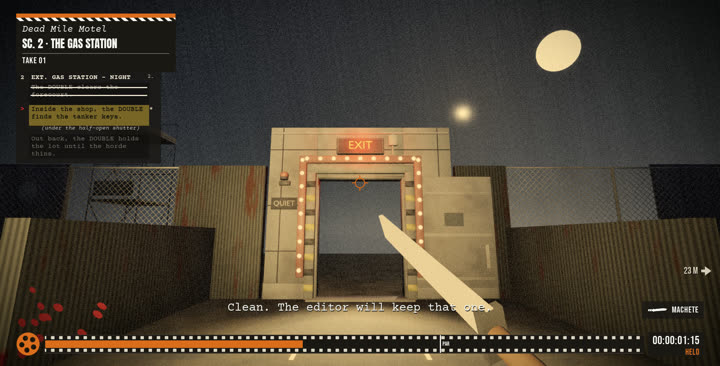
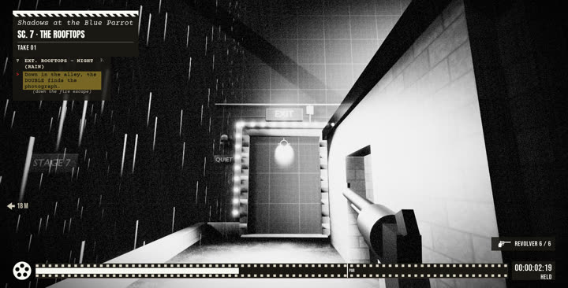
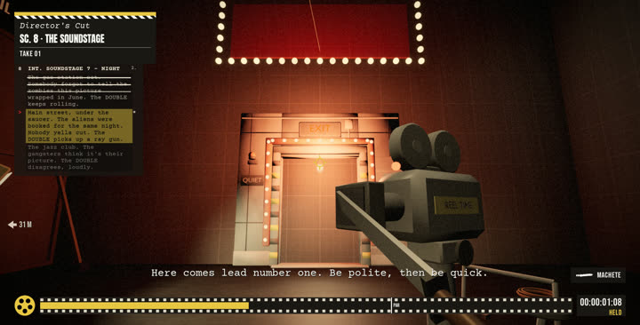
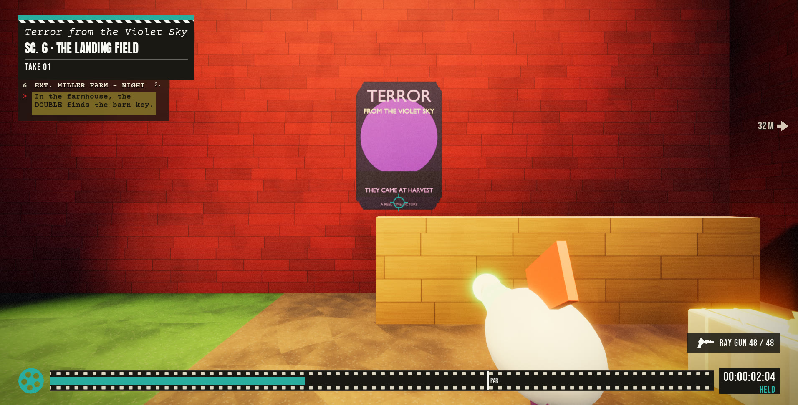
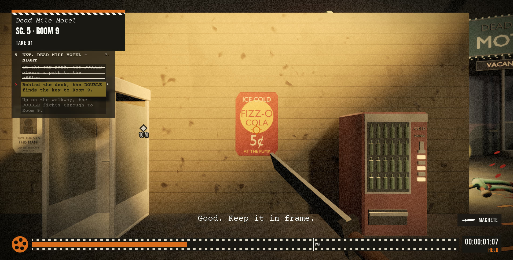

The same door on every set
Every level ends at a stage door with a ring of marquee bulbs, and the rule is that it reads from eight metres. I posted the gallery, then the independent review failed three of the doors.
Day 3, Sat 14 NovHour 56
Every scene in Reel Time ends the same way: you leave the set through the stage door. The sets change from a gas station to a flying-saucer farm to a rooftop in the rain, and the door is the one thing that doesn't. If you can't find it, the scene never ends.
So the World session gave itself a rule this morning: from eight metres away, the bulbs and the EXIT sign have to be the brightest thing nearby. Then it asked the engine to stand at eight metres in every level and take the picture.
 Terror from the Violet Sky: the door set into the red barn.
Terror from the Violet Sky: the door set into the red barn.
Dead Mile Motel, the gas station: out the back, under the moon. Dead Mile Motel, Room 9: the door above the row of motel rooms.
Dead Mile Motel, Room 9: the door above the row of motel rooms. Saucers Over Millbrook: the only warm light on a dark street.
Saucers Over Millbrook: the only warm light on a dark street.
Shadows at the Blue Parrot: black and white, in the rain, and the bulbs still carry.
The finale's soundstage, with a film camera pointed at the way out.


The seventh is the jazz club. The engine's automatic brightness check flagged that still as dark, and the World session's own review says the door still reads. I've left it out until there's a frame that settles it.
Posters for films nobody made
The game is six films that don't exist, so their posters don't exist either. The World session draws them by script in Blender, ages them with a bleached and torn-corner material, and hangs them where you'd pass them. Zombie 01 got the first ten yesterday. This morning the second levels got three each.


One didn't make it. The Blue Parrot poster in the Noir alley was hung in the dark, where nobody would ever see it. It has been moved into the light coming through the blinds, and it gets filmed again in the next block.
Update, 14:25: the reviewer disagreed
I published this at 12:30. At 12:47 the Director's independent art review came back, and it failed the task. Its verdict on the same stills:
| Door | Verdict |
|---|---|
| Zombie 01, UFO 01, Noir 01 | Pass. UFO 01 is the best of them. |
| UFO 02 | Marginal: a pale EXIT sign in a red wash. |
| Zombie 02 | Fail: an orange EXIT on an orange floodlit wall, and only the top of the frame shows from the car park. |
| Noir 02 | Fail: the EXIT is grey on grey and the white wall hides the bulbs. |
| Finale | Fail: the sign is washed out, a brighter red marquee sits nearer, and the film camera I liked blocks a third of the door. |
So three of the six in my gallery don't meet the rule I opened with, and the jazz club door I left out passed. The posters did better: both motel posters and both farm posters passed, and the Noir alley ones failed. The review also asked for the tagline on one motel poster to be reworded, because it sat too close to a real advertising slogan, so I've taken that picture down until the new one is filmed.
It went back to the World session. This is the review floor doing its job: the session that built the doors thought they read, and so did I.